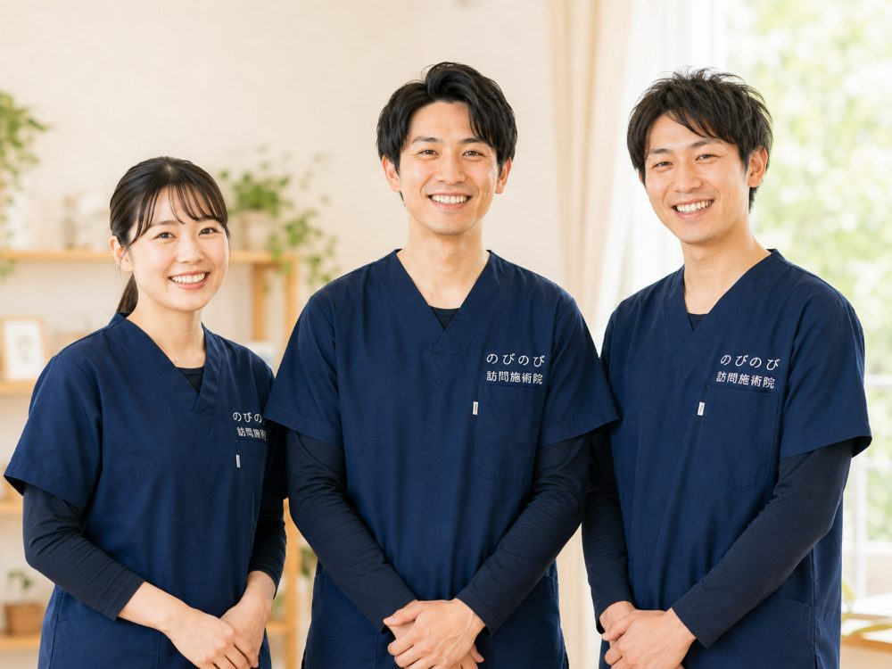

週に何回来てもらえばよいのか、1回どれくらいの時間なのか。頻度は費用にも直結するので、始める前に見通しを持っておきたいところだと思います。訪問鍼灸マッサージの頻度は、症状の状態に応じておおむね週1〜3回、1回はおよそ20〜30分。つらい時期はやや詰めて、落ち着けば間隔をあける、という進め方が基本です。回数の決め方と費用のめやすを、順を追ってお伝えします。
この記事のポイント
頻度は週1〜3回が目安で、痛みやしびれが強い時期は詰め、落ち着いてくれば間隔をあけていきます。1回の施術はおよそ20〜30分。回数は医師の同意とその日の体調で決めるもので、のびのび訪問施術院が事業者の都合で増やすことはありません。1回の総額は3,950円で、1割負担なら約395円。月のめやすは週1回で約1,580円、週2回で約3,160円、週3回で約4,740円です。この費用は「医療保険」で計算し、介護保険の限度額とは別枠です。
週何回うかがうのが目安？
頻度は、その方の症状の状態しだいで変わります。週1回から3回のあいだで行うことが多く、痛みやしびれが強い時期はやや詰めて、和らいできたら少しずつゆるめていきます。回数を左右するのは、医師の同意とご本人の体調です。
決められた回数をこなすこと自体が目的ではありません。暮らしが少しでも楽な状態を保てるかどうかを見ながら、体の様子に合わせて柔軟に決めていきます。感じ方には個人差がありますから、はじめから一本の正解があるわけではない、と考えていただくと気が楽かもしれません。
1回の施術時間はどれくらい？
1回の施術時間は、およそ20〜30分がめやすです。鍼やお灸を中心に、その方の状態に合わせて手技や関節を動かす機能訓練を組み合わせます。手技や機能訓練は鍼灸に加えて行うケアで、追加料金はいただきません。
体調がすぐれない日は10分ほどで切り上げることもできますし、長く受ければよいというものでもありません。同じ姿勢で受け続けると、かえって疲れてしまう方もいます。その日の顔色や体のこわばり具合を確かめながら、負担にならない範囲で行います。
最初のうちだけ回数がやや多めになる理由
痛みやしびれが強い時期は、間隔をあけすぎると次の訪問までに体がまたこわばってしまいます。たとえば週1回だと、施術でいったん楽になっても数日で元のつらさに戻り、毎回ふりだしに近いところから始める、という繰り返しになりがちです。この時期はあえて週2〜3回など少し詰めてうかがい、こわばりや痛みを持ち越しにくくして、少しずつ底上げしていくことをめざします。
とはいえ、これも一律ではありません。ご本人の負担やご家族の生活の都合も含めて、無理のない回数を一緒に決めていきます。
落ち着いてきたら、少しずつ間隔をあけます
施術を重ねて痛みやしびれが和らぎ、状態が落ち着いてきたら、週2回から週1回へ、さらに二週に1回へと、段階を踏んで間隔をあけていきます。良い状態を保つためのメンテナンスに切り替えていくイメージです。間隔をあけてみて調子が保てるかを確かめながら、その方にちょうどよい間合いを探していきます。
のびのび訪問施術院が、事業者の都合で回数を増やすことはありません。落ち着いてきたと感じたら、間隔をあけるご提案はこちらからもお伝えします。
「増やしましょう」と一方的に言わないこと
「回数を増やしましょう」とこちらから一方的にすすめることはありません。ご本人の体調、生活のリズム、ご家族のご都合をうかがいながら、ちょうどよい頻度を探していきます。回数が多いほど良い、という考え方はとっていません。
「今月は少し減らしたい」「予定があるので日を変えたい」といったご相談も、遠慮なくお伝えください。暮らしに合わせて続けられることを、いちばんの目安にしています。
曜日や時間帯は、こちらの予定に合わせて決められます
訪問の曜日や時間帯は、ご本人とご家族のご都合に合わせて相談して決めます。デイサービスや通院の予定がある方は、その予定を避けてうかがうこともできます。
できるかぎり毎回同じ施術者がうかがえるよう配慮しています。同じ担当が続くと、「前回より足のむくみが引いている」「今日は少し表情が硬い」といった小さな変化にも気づきやすく、その日の施術の加減や頻度の見直しに生きてきます。
回数が増えると費用はどうなる？
1回あたりの総額は3,950円で、自己負担は1割の方で約395円がめやすです。月ごとのめやすは、1割の方で週1回が約1,580円、週2回が約3,160円、週3回が約4,740円。あらかじめ見通しを立てておきやすい料金です。エリア内なら別途の出張費や交通費はかからず、どこでも同額です。
回数が増えればそのぶん自己負担も増えますが、必要以上に回数を積み増さないため、費用の見通しは立てやすいと思います。この費用は医療保険で計算し、介護保険の区分支給限度額とは別の枠です。お支払いは月ごとにまとめてお願いしています。内訳はあとからでも確認できます。
こんな方に頻度の相談をおすすめします
「週に何回来てもらえばよいのかわからない」「今の回数が多い気がする」という方は、一度ご相談ください。対象になるのは、医師が必要と認めた慢性の痛みやしびれで、通院がむずかしい方です。保険を使うには医師の同意書が必要で、その手続きはのびのびが進めます。
まずは体の状態をうかがったうえで、無理のない頻度からご提案します。多めの回数を前提にすることはありませんので、ご安心ください。
デイサービスや通院と、無理なく両立できます
訪問鍼灸マッサージは、ほかの在宅サービスや通院と組み合わせて使えます。デイサービスに行く日を避けてうかがう、通院日と重ならない曜日にする、といった調整ができます。頻度を決めるときも、こうした既存の予定を踏まえて無理のない形にします。
介護保険のサービスをお使いの方でも、訪問鍼灸マッサージの費用は介護保険の限度額とは別の枠です。頻度が増えても介護保険の枠を圧迫することはありません。ケアマネジャーと相談しながら、一日の生活リズムのなかにちょうどよく組み込んでいけます。
よくある質問
毎日来てもらったほうが効果は高いですか？
毎日受ければよいというものではありません。頻度は症状の状態に合わせて週1〜3回を目安に決め、落ち着いてくれば間隔をあけていきます。効果の感じ方には個人差があり、回数を無理に増やすことはしません。
1回20〜30分では短くありませんか？
鍼やお灸を中心に、手技や機能訓練を組み合わせて行うため、20〜30分でその日の状態に合ったケアができます。体調に応じて短めにすることもでき、長ければよいというものではありません。
週に何回くらい来てもらえますか？
体の状態に合わせて、週1〜3回のあいだで無理のない範囲に調整します。つらい時期はやや詰め、落ち着いてくれば間隔をあけていきます。
回数は減らせますか？
状態が落ち着けば、週2回から週1回、二週に1回へと段階的に間隔をあけられます。決まった形に縛られず、そのときの調子に合わせて変えていけます。
費用は回数で変わりますか？
1回およそ395円（1割の方）が目安で、月のめやすは週1回で約1,580円、週2回で約3,160円、週3回で約4,740円です。受けた回数分を月ごとにまとめてお支払いいただきます。
この費用は介護保険の限度額に含まれますか？
含まれません。訪問鍼灸マッサージの費用は医療保険で計算し、介護保険の区分支給限度額とは別の枠です。デイサービスなどの利用量を減らさずに受けられます。